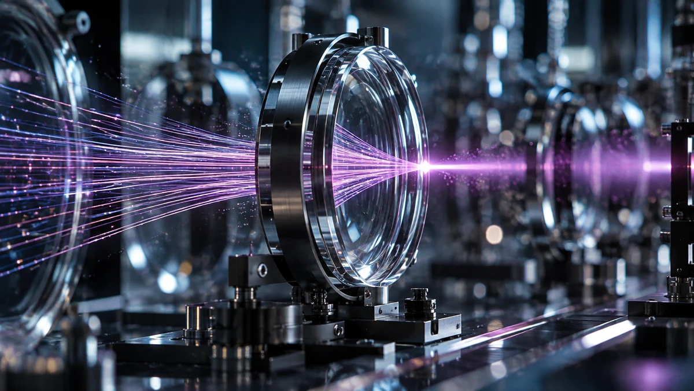

Novaryn presents the blueprint for the next era of AI infrastructure.
View NextWe imagine with pathfinders to discover frontiers unfold worlds and shape technologies beyond physical boundaries.

Novaryn presents the blueprint for the next era of AI infrastructure.
View Next